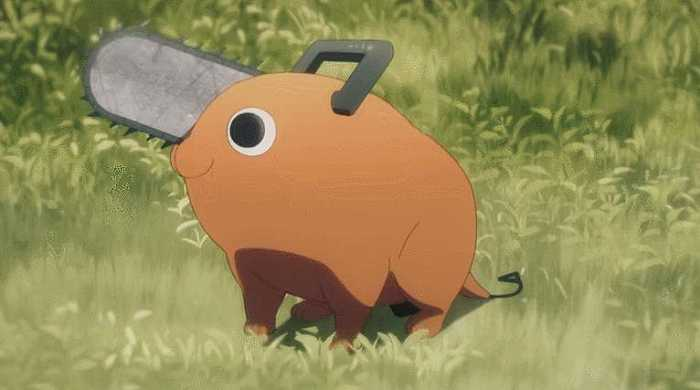
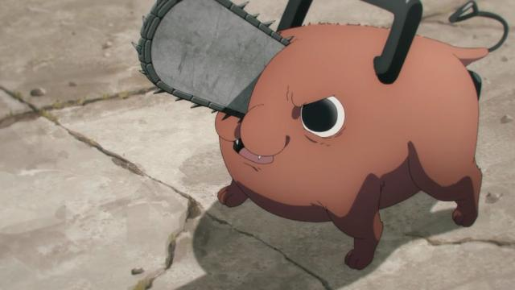
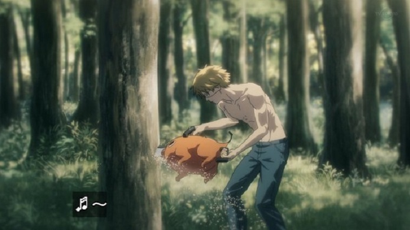

圖解行銷
行銷4P到底是什麼？怎麼用？
不論是飽滿結實、色澤均勻的虎頭柑，
還是經過風霜日曬雨淋，歷練出獨特風味的火燒柑，
又或者是鮮嫩多汁、清甜可口的迷你砂糖橘，
每一種都散發著大自然的韻味，
讓人沉浸在果香的海洋中，每一口都帶來滿滿的幸福感😋
一日兼職📝務農心得
一大清早，搭著張橘長的白色小貨車，首先爬上45度陡坡，經過左右蜿蜒的小路，即使坐在車上但隨時都得躲避沿路樹枝的攻擊，光是上山就非常驚險刺激呢！
戴上手套、拿起一把剪子和水桶，準備上工！穿梭在橘子樹園裡，呼吸著新鮮的空氣，悠閒的採收著橘子
如果剪到手痠了，就喝喝水、看看天空上的老鷹，休息一下再繼續~
我的體力持續到中午只剩50%，坐在籃子上、曬著溫暖的太陽、津津有味地吃著便當，短暫的休息一下後，繼續上工💪
原本以為我還可以繼續採收的，但我的雙臂因為抬久了裝滿橘子的水桶而開始痠痛，雙手也因不斷的重複剪橘子的動作而隱隱作痛😭
最終還沒到下班時間我就罷工了( º﹃º )
聽說...橘子園有吉祥物？😲
⚠️️️到訪的遊客請特別注意⚠️
吉祥物會在不特定的時間出沒
一隻體型略小、頭有鏈鋸尾有拉環的橘色小型犬，
擁有黑白分明的大眼睛以及無時無刻都呈現W型的嘴巴，走路搖搖晃晃的樣子總是能俘虜大人小孩的心😝
吉祥物名叫Pochita，雖然頭上有鏈鋸但沒有攻擊性，園區全面開放餵食及拍照，歡迎來和波奇塔遊玩互動(੭ु´ ᐜ `)੭ु⁾⁾


PLEASE NOTE！危險動作，請勿模仿，違者可處999至9999罰鍰

相關資訊：